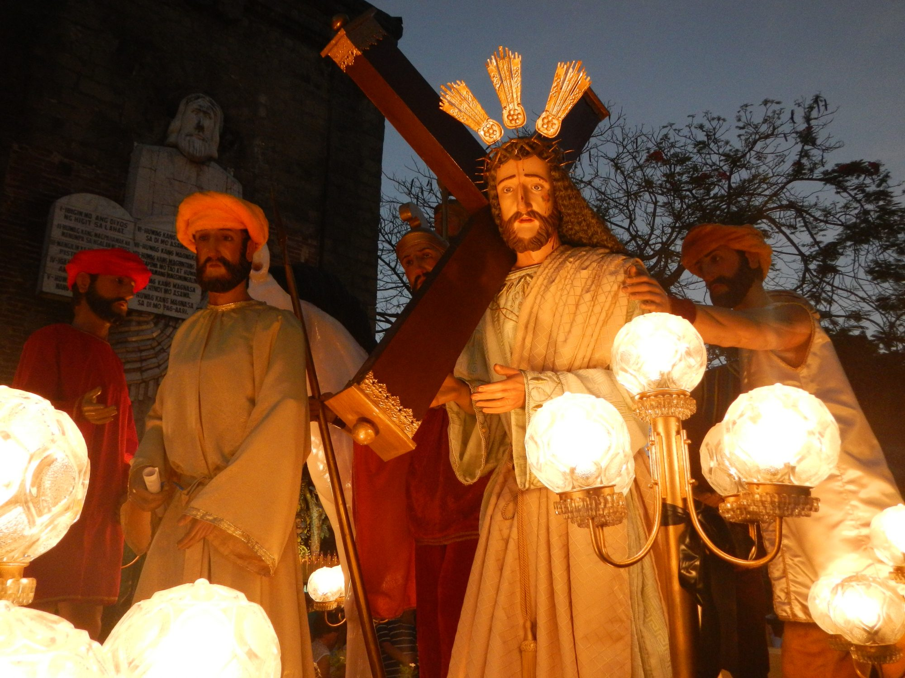
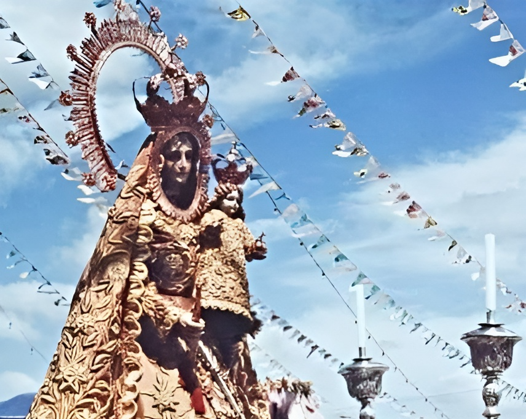

Bacolor celebrates its town fiesta in honor of its patron saint, San Guillermo. The fiesta typically involves religious processions, mass celebrations, traditional dances, and colorful decorations throughout the town.


Fiesta ng San Guillermo
Bacolor celebrates its town fiesta in honor of its patron saint, San Guillermo. The fiesta typically involves religious processions, mass celebrations, traditional dances, and colorful decorations throughout the town.